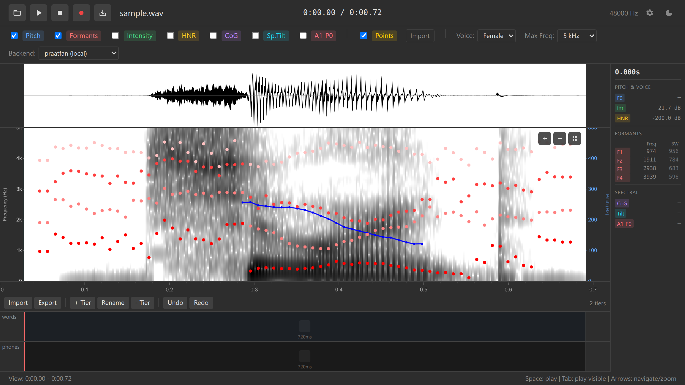

Annotations
Multi-tier TextGrid annotation system
Overview
Ozen-web provides a complete TextGrid-compatible annotation system for transcription, labeling, and segmentation. Create multi-tiered annotations with interval and point tiers, compatible with Praat.

Key Features
- Praat-compatible TextGrid - Import/export in TextGrid format (short and long)
- Multi-tier support - Unlimited annotation tiers
- Interval tiers - Segment audio into labeled intervals
- Boundary editing - Add, remove, move boundaries
- Text editing - Label intervals with text
- Unified undo/redo - Full undo history (Ctrl+Z / Ctrl+Y)
- Keyboard workflow - Efficient shortcuts for rapid annotation
Tier Management
Adding Tiers
Via UI: 1. Click “+ Add Tier” button 2. Enter tier name (e.g., “words”, “phones”, “syllables”) 3. Press Enter to create
Tier Naming: - Use descriptive names: “words”, “phones”, “tones”, “events” - Multiple tiers allow parallel annotations at different granularities
Tier Types
Currently supported: - Interval tiers - Continuous segmentation with boundaries
Planned: - Point tiers - Single time points with labels (future feature)
Deleting Tiers
Tier deletion is permanent and cannot be undone. Export your TextGrid before deleting tiers.
- Click tier menu (⋮)
- Select “Delete tier”
- Confirm deletion
Boundary Management
Adding Boundaries
Double-click method: 1. Double-click on tier at desired time position 2. Boundary appears, splitting the interval
Cursor method: 1. Click on spectrogram to place cursor 2. Double-click on tier at cursor position
- Press Space to play audio
- Press Escape when you hear a boundary
- Double-click tier to add boundary at cursor
- Repeat for all boundaries
Moving Boundaries
Drag and drop: 1. Click and hold boundary marker 2. Drag left or right to new position 3. Release to place
Precision: - Zoom in (scroll wheel) for fine-grained adjustment - Cursor position indicator shows exact time
Boundary Snapping
When adding boundaries on lower tiers, they can snap to boundaries in upper tiers. Double-clicking near an existing boundary on a different tier will snap to that time, maintaining alignment. A boundary can then be dragged to a different location, if so desired.
Removing Boundaries
Right-click menu: 1. Right-click on boundary marker 2. Select “Remove boundary” 3. Adjacent intervals merge
Keyboard shortcut: - Select boundary (click) - Press Delete or Backspace
All boundary operations (add, move, remove) can be undone with Ctrl+Z (Cmd+Z on Mac).
Text Editing
Labeling Intervals
Double-click to edit: 1. Double-click on interval to activate text editor 2. Type label (IPA, orthography, tags, etc.) 3. Press Enter to save 4. Press Escape to cancel
Click to select: - Single-click interval to select without editing - Selected interval highlights
Unicode and IPA Support
Full Unicode support for linguistic transcription:
[ˈhɛloʊ] - IPA transcription
你好 - Chinese characters
🔊 - Emoji labels (for prosody annotation)Multi-line Labels
Press Shift+Enter for multi-line labels (if needed for glosses or notes).
Keyboard Shortcuts
| Shortcut | Action |
|---|---|
| Double-click tier | Add boundary at position |
| Double-click interval | Edit text label |
| Enter | Save text edit |
| Escape | Cancel text edit / deselect |
| Ctrl+Z / Cmd+Z | Undo |
| Ctrl+Y / Ctrl+Shift+Z | Redo |
| Delete / Backspace | Remove selected boundary |
| 1-5 | Switch to tier 1-5 |
See Keyboard Shortcuts Reference for complete list.
Undo System
Ozen-web features a unified undo/redo system for annotation operations:
Undoable operations: - Adding boundaries - Removing boundaries - Moving boundaries - Editing interval text - Adding / removing data points
Non-undoable operations: - Adding/removing tiers (permanent) - Loading files
The undo stack stores the entire annotation state before each operation. You can undo multiple operations sequentially to return to any previous state.
Keyboard: - Undo: Ctrl+Z (Windows/Linux), Cmd+Z (Mac) - Redo: Ctrl+Y (Windows/Linux), Ctrl+Shift+Z (Mac)
TextGrid Import/Export
Importing TextGrid
Requirements: - Audio must be loaded first (the TextGrid import button is only available after loading audio)
File picker: 1. Click “Load TextGrid” button 2. Select .TextGrid file 3. Annotations appear on tiers
Supported formats: - Short TextGrid format (quoted strings) - Long TextGrid format (ooTextFile)
Exporting TextGrid
Via UI button: 1. Click “Export TextGrid” button 2. Choose save location (File System Access API) 3. TextGrid saves in short format
Export format: - Short TextGrid format (Praat-compatible) - UTF-8 encoding - Interval tiers only (current version)
Filename: - Default: annotations.TextGrid - Recommended: Match audio filename (e.g., recording.wav → recording.TextGrid)

Integration with Data Points
Data points automatically capture annotation labels at their time position:
Example TSV export:
time freq pitch F1 label_words label_phones
1.234 720 245 720 "cat" "æ"
1.567 1240 250 850 "sat" "æ"This enables correlation analysis between acoustic measurements and annotation categories.
See Data Points for details.
Best Practices
Tier Organization
Hierarchical structure: 1. Top tier: Largest units (utterances, phrases) 2. Middle tiers: Intermediate units (words, syllables) 3. Bottom tiers: Smallest units (phones, events)
Alignment: - Keep boundaries aligned across tiers when appropriate - Use boundary snapping for consistent segmentation
Labeling Conventions
Be consistent: - Decide on transcription convention (IPA, ARPABET, orthography) - Use same labels for same sounds - Document conventions in separate file
Common systems: - IPA: Universal phonetic transcription - ARPABET: ASCII-friendly phoneme set - X-SAMPA: ASCII IPA alternative - Orthography: Plain text spelling
File Management
Naming: - Match TextGrid filename to audio: speaker01.wav + speaker01.TextGrid - Use consistent naming across corpus
Backup: - Export TextGrid frequently during annotation - Version control for large projects (Git) - Keep original audio files separate from annotations
Troubleshooting
TextGrid Won’t Load
Problem: Error loading .TextGrid file
Possible causes: - File encoding (not UTF-8) - Malformed TextGrid format - Point tiers (not yet supported)
Solution: - Re-export from Praat - Check file encoding (should be UTF-8) - Convert point tiers to interval tiers in Praat
Boundaries Not Snapping
Problem: Boundaries won’t align to other tiers
Solution: - Zoom in closer to boundary - Click precisely on boundary location - Manually align by dragging
Undo Not Working
Problem: Ctrl+Z doesn’t undo operation
Non-undoable operations: - Adding/removing tiers - Loading files
Solution: - Only annotation edits are undoable - Export TextGrid before tier operations
See Also
- Tutorial: Annotations - Step-by-step guide
- Keyboard Shortcuts - Full shortcut reference
- File Formats - TextGrid format details
- Data Points - Collecting measurements at annotations